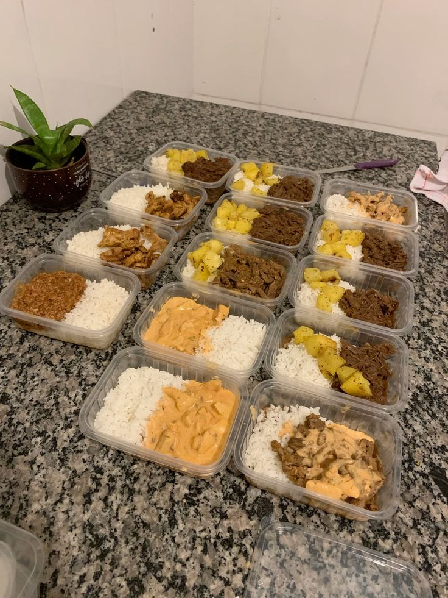
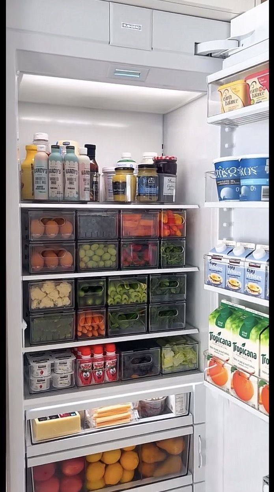

Dicas
Como escolher sua tábua de corte
O material da tábua determina a durabilidade da sua faca, a facilidade de higienização e o risco de contaminação cruzada:
- Polietileno (Plástico): É o mais recomendado por especialistas em segurança alimentar e chefs. Não é poroso, não absorve líquidos, seca rápido e a maioria pode ir à lava-louças. Escolha placas com espessura de pelo menos 2 cm, pois modelos muito finos envergam e são instáveis.
- Madeira (ou Bambu): É a favorita para preservar o fio da faca e oferece conforto ao cortar. No entanto, é porosa e pode absorver umidade e bactérias se não for bem lavada. Exigem cuidados manuais (não podem ir à lava-louças) e precisam de hidratação periódica com óleo mineral para não rachar.
- Vidro e Metal: Devem ser evitados. Embora sejam muito fáceis de limpar, eles destroem o fio das facas e tornam o corte desconfortável e escorregadio.

Como congelar marmitas
Congelar marmitas é uma ótima maneira de economizar tempo e garantir refeições saudáveis durante a semana. Aqui estão algumas dicas para congelar suas marmitas de forma eficaz:
- Escolha recipientes adequados: Use recipientes herméticos próprios para congelamento, como potes de vidro ou plástico resistente. Evite recipientes que possam quebrar ou deformar no freezer.
- Porções individuais: Divida as marmitas em porções individuais para facilitar o descongelamento e evitar desperdício.
- Resfriamento antes do congelamento: Deixe as marmitas esfriarem completamente antes de colocá-las no freezer para evitar a formação de cristais de gelo.
- Etiquetagem: Coloque etiquetas com a data de preparo e o conteúdo da marmita para facilitar a organização e o controle do prazo de validade.

Como organizar sua geladeira
Organizar a geladeira de forma eficiente ajuda a manter os alimentos frescos por mais tempo e facilita o acesso aos itens que você precisa. Aqui estão algumas dicas para organizar sua geladeira:
- Prateleiras superiores: Armazene alimentos prontos para consumo, como sobras, laticínios e bebidas.
- Prateleiras do meio: Coloque alimentos que precisam de temperatura constante, como ovos, queijos e frios.
- Prateleiras inferiores: Armazene carnes cruas e peixes em recipientes fechados para evitar contaminação cruzada.
- Gavetas: Use as gavetas para frutas e vegetais, mantendo-os separados para prolongar a vida útil.
- Porta da geladeira: Armazene condimentos, molhos e bebidas na porta, pois é a área menos fria da geladeira.
